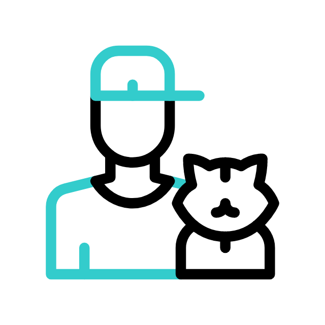

PAWS SERVICES
Pet Health Checkups
Behavior Training
Post-Adoption Support

Adoption Counseling

At Paws, we believe that pets bring boundless joy, unconditional love, and an unparalleled sense of companionship into our lives. Our mission is to be your ultimate destination for finding the perfect furry friend that will enrich your life with their presence. Whether you're a seasoned pet owner or a first-time adopter, Paws is here to guide you through the process of finding your ideal companion.Paws is not just another pet buying website; we are advocates for responsible and ethical pet ownership. Our commitment to the well-being of animals is unwavering, and we only work with reputable breeders and shelters that prioritize the health and happiness of their pets. We firmly believe that every pet deserves a loving and forever home, and we actively support adoption efforts to find homes for rescue animals.Join the Paws Family Today
You're giving a pet a second chance at a happy life. Many pets in shelters have been abandoned or neglected, and they deserve to be loved and cared for. Every year, millions of pets are euthanized in shelters because they don't find homes. By adopting a pet, you're helping to reduce the number of animals that are killed. Adopted pets are just as loving and loyal as pets from breeders. They can bring years of joy and companionship into your life.
Cute dogs are a joy to behold. Their big, floppy ears, wagging tails, and playful smiles can melt even the coldest heart. There are so many different breeds of cute dogs, each with its own unique personality. Some of the most popular cute dog breeds include Golden Retrievers, Labrador Retrievers, Beagles, Bulldogs, and Dachshunds.
MORE
Cats are known for their beauty, intelligence, and independence. But what really makes them so special is their cuteness. Whether they're curled up in a ball, chasing a laser pointer, or playing with a string, there's something about cats that just melts our hearts. So if you're looking for a friend to bring some joy into your life, a cat is a great option.
MOREBunnies are some of the cutest animals on the planet. They have soft, fluffy fur, big, expressive eyes, and long, twitching ears. Some of the most popular breeds of cute rabbits include the Netherland Dwarf, the Lionhead, the Harlequin, and the Angora. They are all very playful and affectionate,
MORE
Birds are fascinating creatures that can make wonderful pets. They are intelligent, playful, and can provide years of companionship. However, before you get a bird, to do your research and make sure that you are prepared to provide the proper care. They can also be noisy, so they are a good fit for your lifestyle
MORE